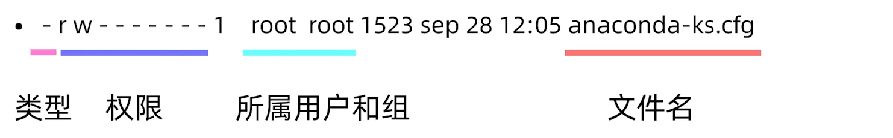
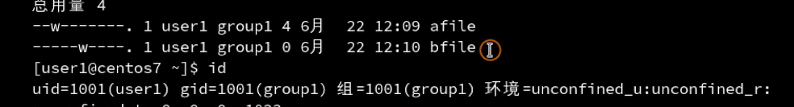

文件权限

不同文件类型，linux不是以扩展名进行区分，而是以文件类型进行区分，
| 符号 | 含义 |
|---|---|
- |
普通文件 |
d |
目录文件 |
b |
块特殊文件,指的是设备，比如插上u盘，那么u盘就是一个块设备 |
c |
字符特殊文件 |
l |
符号链接 |
f |
命名管道 |
s |
套间字文件 |
字符与数字的关系
rwx =111,
r=100，是4
w=010,是2
xx=001,是1
文件夹权限的表示方式
| 字符 | 含义 |
|---|---|
| x | 进入目录 |
| rx | 显示目录下的文件名 |
| wx | 修改目录下的文件名 |
修改文件用户权限
chmod 修改文件、目录权限
chmod u+x /dirchmod 755 /dir
chown 更改属主、属组。
修改属主 chown newuser dir
修改属组 chown :newgroup dir
修改文件权限
chmod 通过加减进行权限控制。
chmod u 代表属主；chmod g 代表属组；chmod o 代表其他；chmod a 代表所有；
| 字符 | 含义 |
|---|---|
| `chmod u+x | 给属主文件加上执行的权限 |
| `chmod u=x | 属主文件只有执行的权限 |
| `chmod u-x | 属主文件去掉执行的权限 |
更简便的方式——通过数字
chmod 446 file 将446权限赋值给file用户。
权限管理
当权限发送冲突时候，以属主为准，如下图：

user1 对bfile没有任何权限，但是group1有可删除权限，那么就是属主原则，没有任何权限
文件夹目录
x表示进入目录
r表示读取文件夹内的子文件
下面两张图是相反的两张图
w表示在文件夹内创建和删除子文件的权限
x表示在文件夹内